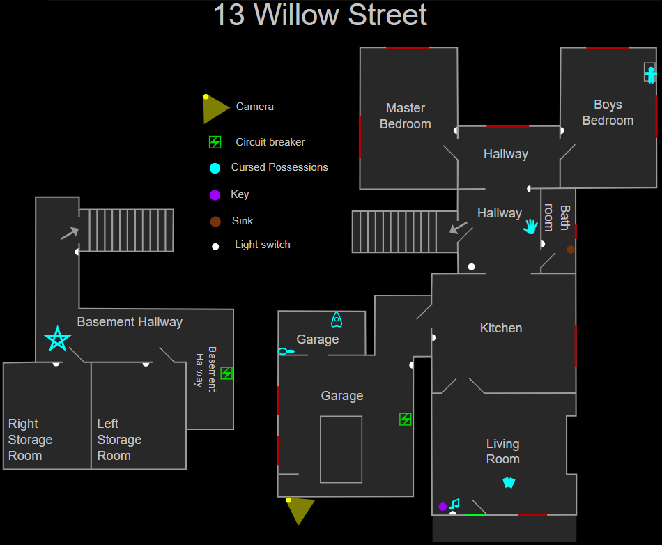

13 Willow Street
13 Willow Street (или просто Willow) — это карта в Phasmophobia.
Это небольшой одноэтажный дом с двумя спальнями и одной ванной комнатой, а также небольшим гаражом и подвалом.
Это одна из самых маленьких карт в игре: она лишь немного больше, чем 6 Tanglewood Drive, но кажется почти крошечной из-за просторных открытых комнат,
что резко контрастирует с обычно перегруженной обстановкой других пригородных домов.
Из-за своего небольшого размера, эта карта часто позволяет быстро провести расследование,
но отсутствие шкафчиков, укрытий и легкодоступных боковых комнат,
где можно спрятаться, делает её относительно опасной во время охоты.
Таким образом, игрокам придется изучить все тонкости того, как прятаться за мебелью, чтобы выжить.
Структура
В доме есть две спальни, одна ванная комната, гараж и большой подвал, а также другие помещения.
Также в доме присутствует один плюшевый мишка в комнате для мальчиков.
Двойная стеклянная дверь между кухней и гостиной является блокиратором лучей обнаружения призрака.
Двери в закрытом виде, можно относительно безопасно наблюдать за призраком через стёкла.
Но учтите, призрак сможет к вам наведаться, если вы его привлечёте, или он придёт к вам случайным образом.

Укрытия и стратегии
На этой локации нет запирающихся шкафчиков, в которых можно было бы спрятаться, но присутствует несколько укрытий.
В зависимости от сложности, некоторые из них будут случайным образом заблокированы громоздкими предметами, что не позволит игрокам спрятаться в них:
- Любитель: —
- Средняя: ≤ 5
- Профессионал: ≤ 6
- Кошмар/Безумие: ≤ 7
- Игра втроём: +1 открытое укрытие
- Игра вчетвером: +2 открытых укрытия
Водить призрака кругами можно вокруг пикапа в гараже или на кухонном островке.
Диван в гостиной также можно частично использовать для перемещения в сторону кухни, если это необходимо.